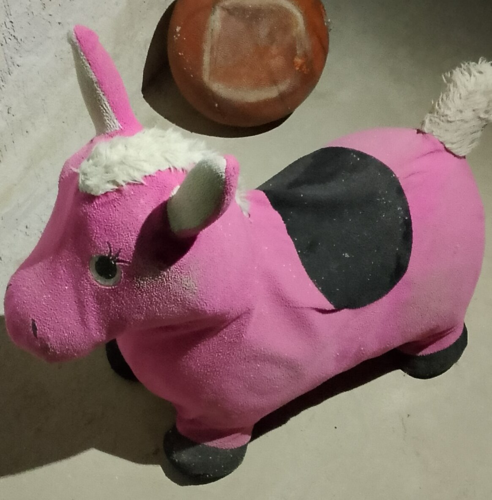

На этом сайте ты узнаешь: как пройти бекрумс, что делать если ты увидел человека или услышал шаги, где есть выходы и ещё много чего.
ДАННЫЙ САЙТ ГОТОВ НЕ ПОЛНОСТЬЮ
Чтобы пройти бекрумс нужно погладить победного ослика, как он выглядит можно увидеть ниже.

Если вы увидели человека рядом то бегите к ближайшему выходу, переждите там и отправляйтесь дальше, но если человек был далеко то можно пойти в укрытие и там переждать. Если же человек побежал за вами, то срочно бегите к ближайшему выходу и покидайте бекрумс.
Если вы увидели машину то просто спрячтесь в ближайшем укрытиее, переждите пока машина проедет, и идите дальше. Если вы услышали звук машины то сделайте тоже самое.